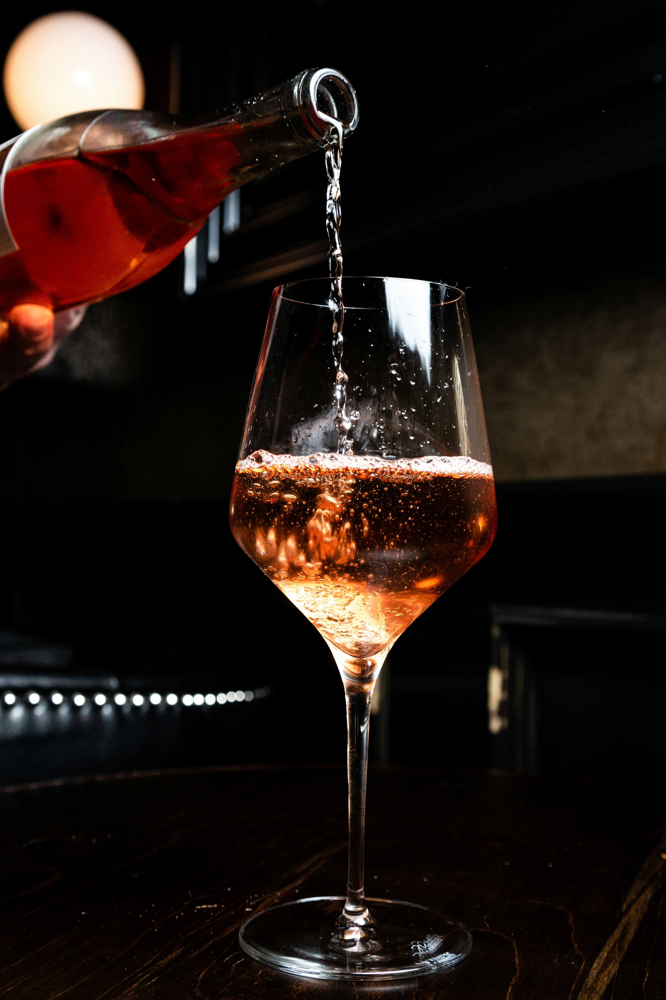

Loki Mystical LIIT

Ingredients:
- 1 oz gin
- 1 oz vodka
- 1 oz rum
- 1 oz tequila
- 1 oz triple sec
- 1 oz cola
- Splash of cranberry juice
- Garnish: Fresh mint leaves, lemon slice
Process:
- Pour all the spirits into a shaker with ice.
- Shake vigorously, letting the flavors intertwine like Loki’s trickery.
- Strain into a tall glass filled with fresh ice.
- Top off with cola and a splash of cranberry juice.
- Garnish with mint leaves and a lemon slice.
Speciality
This mysterious take on the Long Island Iced Tea packs a surprising twist—just like Loki’s pranks. Every sip brings something unexpected.